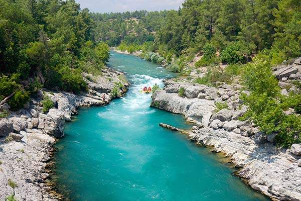
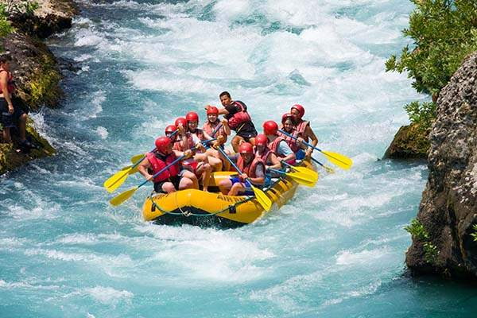

Our purpose is to provide safe, exciting, and memorable rafting adventures. We help families and friends enjoy nature, build confidence, and create lasting memories on the river.


Our purpose is to provide safe, exciting, and memorable rafting adventures. We help families and friends enjoy nature, build confidence, and create lasting memories on the river.
Lagos River Adventures started with a group of friends who enjoyed spending time on the river. They wanted other people to experience the fun of rafting too.

Today, our guides bring people together through teamwork, careful preparation, and respect for the river. Each trip is an opportunity to explore the outdoors and make new memories.

